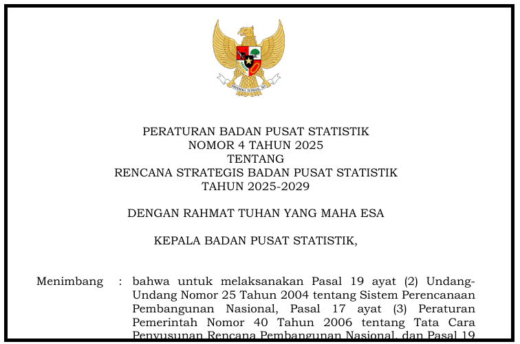

About Platform
BPS Big Data Dissemination Platform
This platform was developed to support the implementation of one of the strategic directions of BPS 2025–2029, namely the utilization of Big Data in supporting official statistics. This platform is used as a channel to disseminate Big Data product results to support official statistics. The platform provides three main product components, namely (1) publication; (2) dataset; and (3) dashboard.
History
Big Data BPS
One of the Strategic Plans (Renstra) of BPS for 2025–2029 is to support the provision of high-quality statistical data through the utilization of Big Data for Official Statistics, thereby strengthening the national statistical system. Efforts undertaken to support this objective include the development of dissemination platforms and Big Data processing products that can be utilized as information sources in supporting official statistics.
